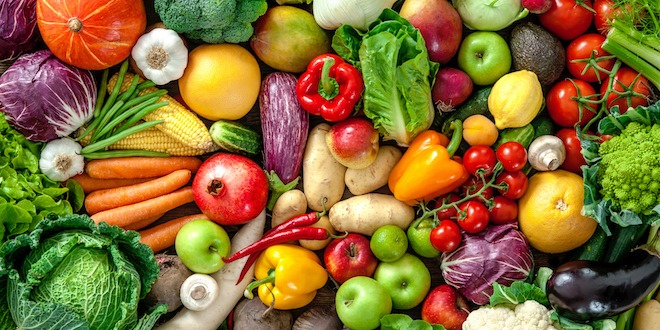

Most food has its origin in plants. Some food is obtained directly from plants; but even animals that are used as food
sources are raised by feeding them food derived from plants. Cereal grain is a staple food that provides more food
energy worldwide than any other type of crop.Corn (maize), wheat, and rice in all of their varieties – account
for 87% of all grain production worldwide.Most of the grain that is produced worldwide is fed to livestock.
Some foods not from animal or plant sources include various edible fungi, especially mushrooms. Fungi and ambient
bacteria are used in the preparation of fermented and pickled foods like leavened bread, alcoholic drinks, cheese,
pickles, kombucha, and yogurt. Another example is blue-green algae such as Spirulina.Inorganic substances such as
salt, baking soda and cream of tartar are used to preserve or chemically alter an ingredient.
Plants

Many plants and plant parts are eaten as food and around 2,000 plant species are cultivated for food. Many of these
plant species have several distinct cultivars.
Seeds of plants are a good source of food for animals, including humans, because they contain the nutrients necessary
for the plant's initial growth, including many healthful fats, such as omega fats. In fact, the majority of food
consumed by human beings are seed-based foods. Edible seeds include cereals (corn, wheat, rice, et cetera), legumes
(beans, peas, lentils, et cetera), and nuts. Oilseeds are often pressed to produce rich oils - sunflower, flaxseed,
rapeseed (including canola oil), sesame, et cetera.
Seeds are typically high in unsaturated fats and, in moderation, are considered a health food. However, not all seeds
are edible. Large seeds, such as those from a lemon, pose a choking hazard, while seeds from cherries and apples
contain cyanide which could be poisonous only if consumed in large volumes.
Fruits are the ripened ovaries of plants, including the seeds within. Many plants and animals have coevolved such
that the fruits of the former are an attractive food source to the latter, because animals that eat the fruits may
excrete the seeds some distance away. Fruits, therefore, make up a significant part of the diets of most cultures.
Some botanical fruits, such as tomatoes, pumpkins, and eggplants, are eaten as vegetables.
Vegetables are a second type of plant matter that is commonly eaten as food. These include root vegetables, bulbs, leaf vegetables, stem vegetables, and inflorescence vegetables.
Animals
Animals are used as food either directly or indirectly by the products they produce. Meat is an example of a
direct product taken from an animal, which comes from muscle systems or from organs.
Food products produced by animals include milk produced by mammary glands, which in many cultures is drunk or
processed into dairy products (cheese, butter, etc.). In addition, birds and other animals lay eggs, which are often
eaten, and bees produce honey, a reduced nectar from flowers, which is a popular sweetener in many cultures. Some
cultures consume blood, sometimes in the form of blood sausage, as a thickener for sauces, or in a cured, salted form
for times of food scarcity, and others use blood in stews such as jugged hare.
Some cultures and people do not consume meat or animal food products for cultural, dietary, health, ethical, or ideological reasons. Vegetarians choose to forgo food from animal sources to varying degrees. Vegans do not consume any foods that are or contain ingredients from an animal source.